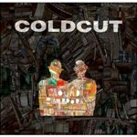
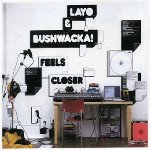

Najbolje ploče 2006. elektro/beat/hip-hop/downtempo, dno liste
10. Herbert "Scale"
Matthew Herbert zna!
Kada se tome doda činjenica da je voljan da improvizuje, rezultat je u svakom slučaju osvežavajući. Iako "Scale" nije remek delo, toplo preporučujem ovaj album, vrlo sofisticirana elektro muzika.

9. Coldcut "Sound mirrors"
Ovaj album meni zvuči kao kompilacija. Definitivno nije najbolja ploča koju su napravili, ali prvi "regularan" album Coldcut u zadnjih 9 godina zaslužuje kod mene barem mesto broj 9.
E, da, skoro su svirali u Beogradu. Da li neko zna kako je bilo?
8. Clipse "Hell hath no fury"
Hip-hop je već neko duže vreme smrtno dosadan. Ego-tripovi bivših kriminalaca, imam pametnija posla...
Ipak, desilo se da sam nekako nabasao na ovu ploču i moram da priznam da sam bio prijatno iznenadjen. Da se razumemo, Clipse nisu Tribe Called Quest niti De La Soul (u prevodu: šarmantni, lucidni i inteligentni), "Hell hath no fury" nema ludu energiju albuma "Black Sunday"/CH ili ubitacni ritam "Fear of the black planet"/PE; ipak, ima nešto u ovoj ploči što mene radi.
Obavezno proverite "Mr. Me Too"
7. Layo&Bushwacka! "Feels Closer"
"Feels Closer" je odlična ploča: funkcioniše sjajno u kolima, kući uvek oraspoloži, a neizbežan je deo plejliste za novogodišnju/bilo koju žurku. Nema mnogo filozofije, ovi momci znaju kako se pravi hit, mada na ovom, trećem po redu i po meni njihovom najboljem, albumu pokazuju da znaju i kako se pravi muzika.
Stoga, za Layo&Bushwacka! mesto broj 7.!
6. Nightmares On Wax "In a Space Outta Sound"
Nightmares On Wax su soul zvezde prve dekade 21. veka, tako nekako. Zvuk na ovoj ploči je besprekoran - očigledno poznavanje najsvremenijih producentskih metoda, koje u isto vreme ne skreće pažnju sa fenomenalnih kompozicija, pravi balans!
Da je kojim slučajem 1996. ili 2012. ovo ploča bi kod mene lako našla put do prvih deset i to je njen osnovni kvalitet. Ovaj album ću slušati i u 2007., dovoljno da "In a Space Outta Sound" zauzme vrh donjeg/gornjeg dela moje elektro/beat/hip-hop/downtempo liste za 2006. godinu. U sledećem javljanju vrh liste, so stay tuned, baby!
 RSS feed
RSS feed
 sadržaji se objavljuju pod
sadržaji se objavljuju pod
Coldcut odlični! Ja sam u stanju jednu pesmu da puštam na repeat sve dok mi se bukvalno ne smuči. I još nije.
elektrokuhinja | 09.12.06 17:27